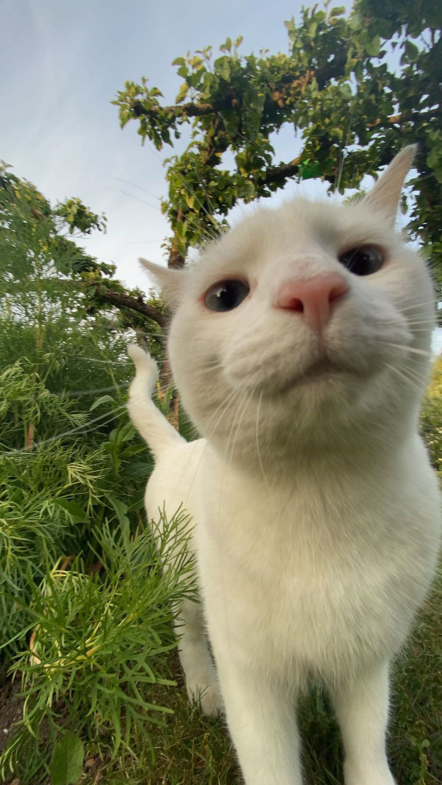
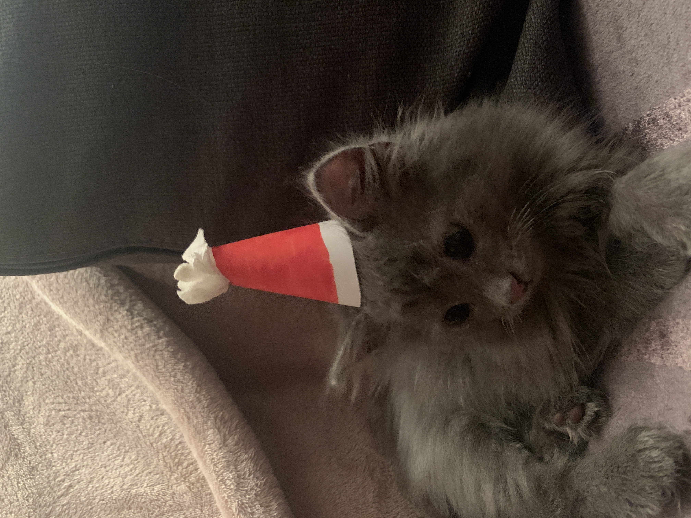
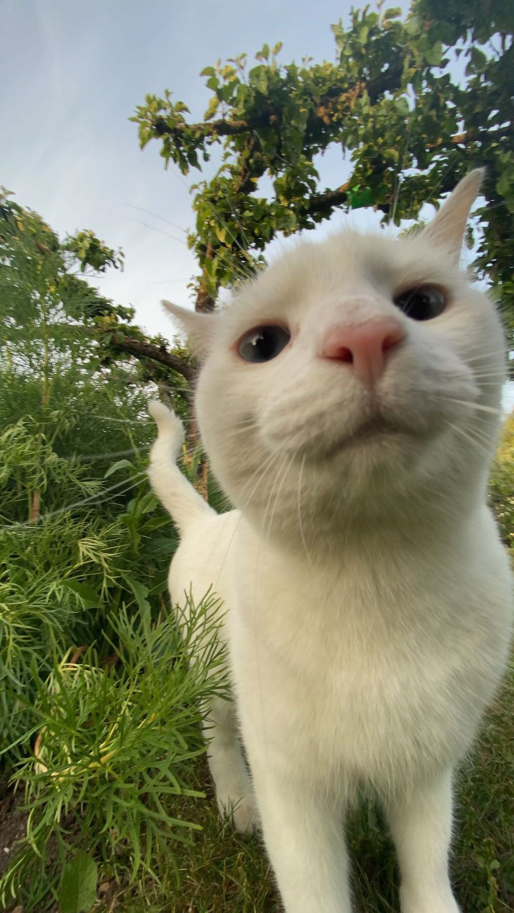
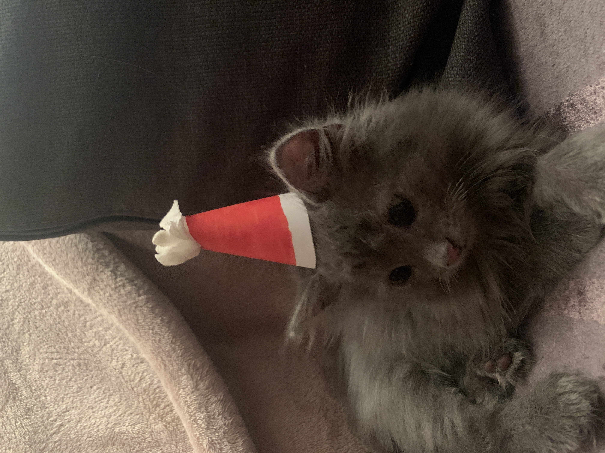

My on kolmeaastane, hall ja pikakarvaline. Ta on kohati isekas, võib hammustada, samas meeldib inimeste lähedus, kui ta seda ise parajasti tahab. Lemmik koht magamiseks on voodi või diivan. Talle meeldib süüa kvaliteetset kassitoitu ja kanafileed. Lemmikmänguasjaks on fooliumist pall või kommipaberid.
Naljakas fakt: Elav kehastus ütlusest “ilus, aga loll”.
Po on kolmeaastane, valge ja lühikarvaline. Iseloomult on väga rahulik, ei hammusta kunagi, talle ei meeldi, kui sülle võetakse, aga päris tihti tuleb ise. Lemmik magamiskoht on diivani seljatoe peal. Lemmiktoit, mille peale ta lausa hullub ja teisest toast kohale jookseb, on toores kanafilee. Talle meeldib mängida hiirtega, kelle ta õues ise kinni püüab.
Naljakas fakt: Ta on koer kassi kehas, jalutab õues kõrval täpselt nagu koer
 


